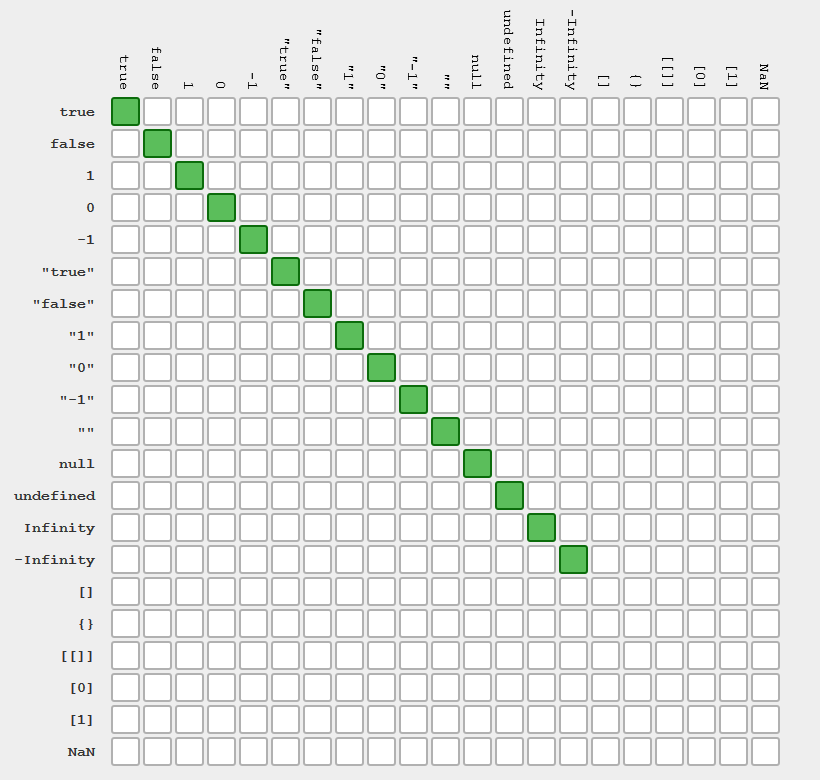
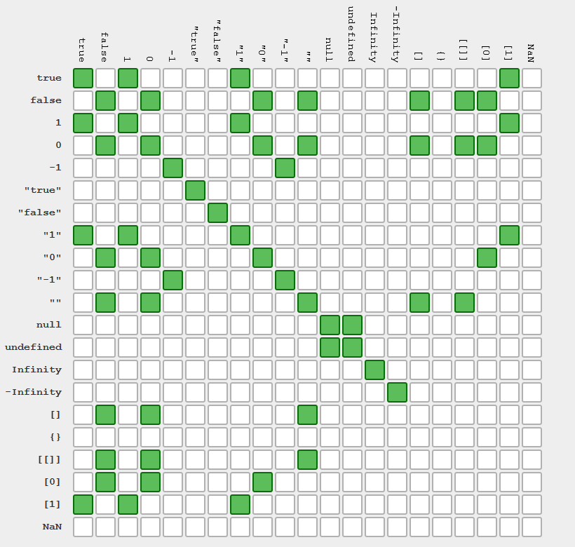

1. Математичні оператори
Нічим не відрізняються від шкільного курсу математики. Оператори повертають значення на місце операції. Порядок обчислення математичних виразів і т. п. Це всім звична алгебра.
Важливо запам'ятати правильне іменування складових виразу. + - * / %
називаються операторами, а то на чому вони застосовуються операндами.
// Операції з числами
const x = 10;
const y = 5;
// Додавання
console.log(x + y); // 15
// Віднімання
console.log(x - y); // 5
// Множення
console.log(x * y); // 50
// Ділення
console.log(x / y); // 2
// Залишок від ділення
console.log(x % y); // 0
// Додавання із заміною (є і для інших операторів)
let value = 5;
// Аналогічно записи value = value + 10;
value += 10;
console.log(value); // 15
2. Оператори порівняння
Використовуються для порівняння значень. Результатом свого виконання повертають
були, true або false.
a > bіa < b- більше / меншеa >= bіa <= b- більше / менше або дорівнюєa == b- рівністьa != b- нерівністьa === b- строга рівністьa !== b- строга нерівність
const x = 5;
const y = 10;
const z = 5;
console.log('x > y:', x > y); // false
console.log('x < y:', x < y); // true
console.log('x < z:', x < z); // false
console.log('x <= z:', x <= z); // true
console.log('x === y:', x === y); // false
console.log('x === z:', x === z); // true
console.log('x !== y:', x !== y); // true
console.log('x !== z:', x !== z); // false
3. == і ===
Завжди використовуйте строгу рівність === і строгу нерівність !==. Оператори
== і != виконують перетворення типів порівнюваних значень, що може призвести
до помилок, особливо у початківців. На зображеннях нижче показані таблиці
порівняння значень використовуючи оператори == і ===.
При використанні === для перевірки рівності, все одно тільки собі. Перед
оцінкою нічого не перетвориться.

При використанні == для перевірки рівності, відбувається приведення типів
операндів.
